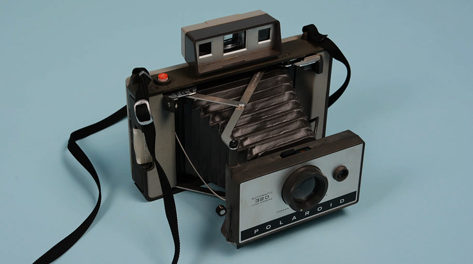
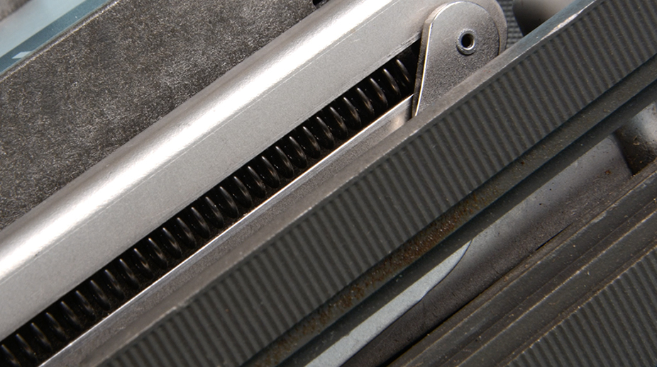
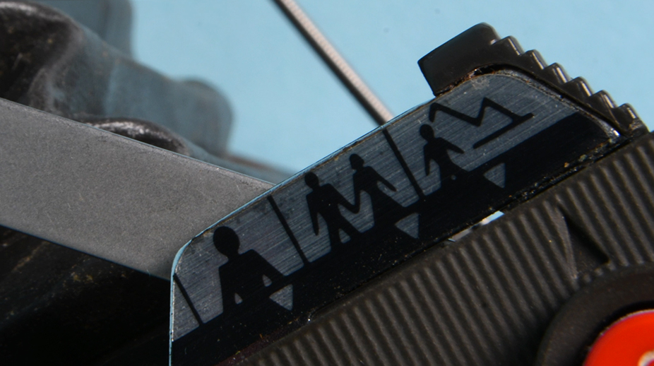
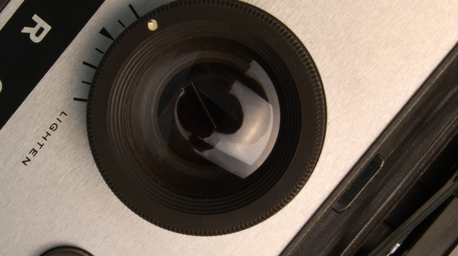
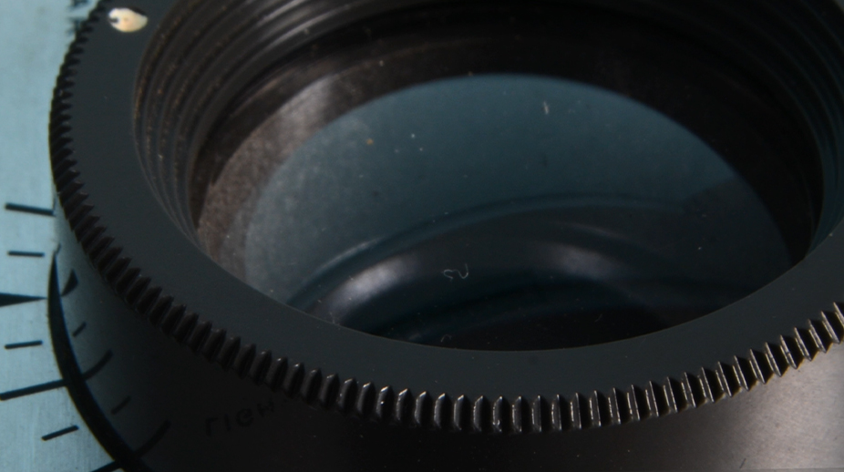
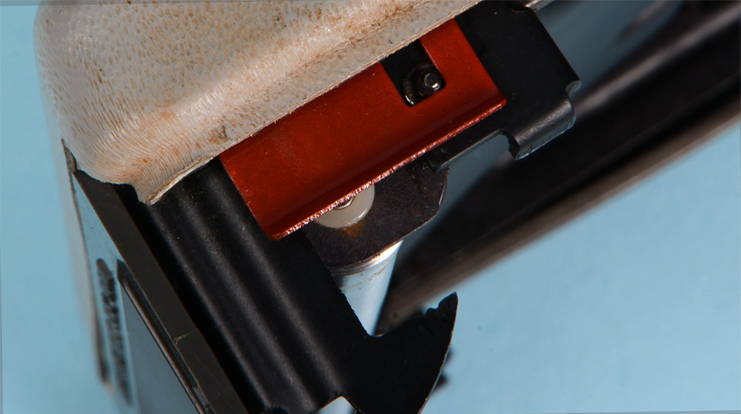

Révélation
Pub fictive pour Polaroïd
Réalisé en 2021 dans le cadre de mon DSAA Design Numérique à l'ensaama. Bref projet fabriqué avec Zoé Schiaffino, Matteo Cavarra et Anna Bessone.
Cette vidéo est intégralement réalisée à partir de photos, en alternant stop motion et montage dynamique, pour un rendu vivant et rétro. Notre sujet était ce vieil et mystérieux appareil photo Polaroïd, dont nous avons saisi les détails et les formes sous une lentille macro. Entre détail et abstraction, on exploite textures et lignes fortes. Le stop motion donne vie à l'objet inanimé tandis que le sound design, fait main à partir des sons samplés à l'appareil, nous rapproche de lui.
Dans ce projet, entre autres, j'ai notamment réalisé les scènes de stop motion.





